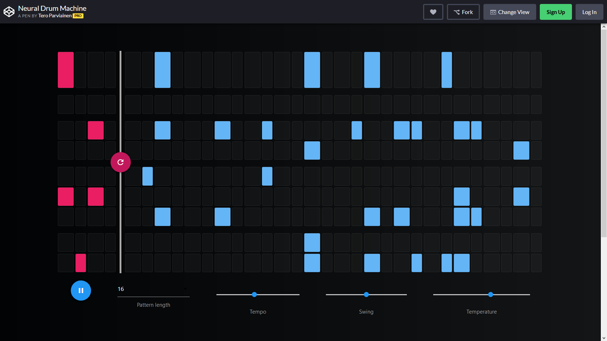

Music Generation with Magenta
Using Machine Learning in Arts
Alexandre DuBreuil
@dubreuia
Alexandre DuBreuil
Software engineer, sound designer, conference speaker and open source maintainer.
@dubreuia
Generative Music
(in 10 minutes)
"Generative art is an artwork partially or completely created by an autonomous system."
Make music without being a musician
Maybe you don't know how to improvise, maybe you need help to compose.
{kind=link}
Monica Dinculescu - Why you should build silly things
It is okay to make art without taking ourselves seriously. Generative music is a good way of doing that, because those kind of systems can be interacted with easily.
https://www.corelogic.com.au/sites/default/files/2018-08/1200px-800px--tworobots.jpg
{kind=link}
Helping people build generative systems
To make generative art, you need autonomous systems that makes it possible. As software developers, this is our role to provide that, whether it is for an art exhibit, a generative radio, or a fun website.
https://i.pinimg.com/originals/07/3e/86/073e862a13e4bacc7589f0d4eff4b873.jpg
{kind=link}
"The weird and the strange is good" - Brian Eno
Generative systems makes tons of mistakes (also humans), but mistakes are good.
{kind=link}
Representation: MIDI
MIDI is a musical representation analogous to sheet music, where note has a pitch, velocity, and time.
Working with MIDI shows the underlying structure of the music, but doesn't define the actual sound, you'll need to use instruments (numeric or analogic).

Representation: audio
Working with audio is harder because you have to handle 16000 samples per seconds (at least) and keep track of the general structure. Generating audio is more direct than MIDI.

https://upload.wikimedia.org/wikipedia/commons/c/c5/Spectrogram-19thC.png
{kind=link}
Machine Learning
Hand crafting the rules of a painting or the rules of a music style might be a hard task. That's why Machine Learning is so interesting in arts: it can learn complex functions.
Music generation with RNNs (MIDI)
 Recurrent Neural Networks (RNNs) solves two important properties for
music generation: they operate on sequences for the inputs
and outputs and they can remember past
events.
Recurrent Neural Networks (RNNs) solves two important properties for
music generation: they operate on sequences for the inputs
and outputs and they can remember past
events.
{kind=link}
Long-term structure with LSTMs (MIDI)
 Most RNN uses Long Short-Term Memory (LSTM) cells, since by
themselves, RNNs are hard to train because of the problems of
vanishing and exploding gradient, making long-term dependencies
hard to learn.
Most RNN uses Long Short-Term Memory (LSTM) cells, since by
themselves, RNNs are hard to train because of the problems of
vanishing and exploding gradient, making long-term dependencies
hard to learn.
By using input, output and forget gates in the cell, LSTMs can learn mechanisms to keep or forget information as they go.
https://www.asimovinstitute.org/wp-content/uploads/2016/09/lstm.png
{kind=link}
Latent space interpolation with VAEs (MIDI)
 Variational Autoencoders (VAEs) are a pair of networks where an
encoder reduces the input to a lower dimensionality (latent
space), from which a decoder tries to reproduce the
input.
Variational Autoencoders (VAEs) are a pair of networks where an
encoder reduces the input to a lower dimensionality (latent
space), from which a decoder tries to reproduce the
input.
The latent space is continuous and follows a probability distribution, meaning it is possible to sample from it. VAEs are inherently generative models: they can sample and interpolate (smoothly move in the latent space) between two points.
https://www.asimovinstitute.org/wp-content/uploads/2016/09/vae.png
{kind=link}
Audio generation with WaveNet Autoencoders (audio)
 WaveNet is a convolutional neural network (CNN) taking raw signal
as an input and synthesizing output audio sample by sample.
WaveNet is a convolutional neural network (CNN) taking raw signal
as an input and synthesizing output audio sample by sample.
The WaveNet Autoencoder present in Magenta is a Wavenet-style AE network capable of learning its own temporal embedding, resulting in a latent space from which is it possible to sample and mix elements.
magenta.tensorflow.org/assets/nsynth_05_18_17/encoder-decoder.png
{kind=link}
What's in Magenta?
| Model | Network | Repr. | Encoding |
|---|---|---|---|
| DrumsRNN | LSTM | MIDI | polyphonic-ish |
| MelodyRNN | LSTM | MIDI | monophonic |
| PolyphonyRNN | LSTM | MIDI | polyphonic |
| PerformanceRNN | LSTM | MIDI | polyphonic, groove |
| MusicVAE | VAE | MIDI | multiple |
| NSynth | Wavenet AE | Audio | - |
| GANSynth | GAN | Audio | - |
Live code: Generate a track
(in 20 minutes)
STEP 1: make everything sound like a cat.
We'll use NSynth to mix cat sounds with other sounds.
{kind=link}
STEP 1: The sounds

STEP 1: Entry point
See "code/nsynth.py" and method app in this repo.
def app(unused_argv):
encoding1, encoding2 = encode([FLAGS.wav1, FLAGS.wav2],
sample_length=FLAGS.sample_length,
sample_rate=FLAGS.sample_rate,
checkpoint=FLAGS.checkpoint)
encoding_mix = mix(encoding1, encoding2)
synthesize(encoding_mix, checkpoint=FLAGS.checkpoint)
STEP 1: Encode
See "code/nsynth.py" and method encode in this repo.
def encode(paths: List[str],
sample_length: int = 16000,
sample_rate: int = 16000,
checkpoint: str = "checkpoints/wavenet-ckpt/model.ckpt-200000") \
-> np.ndarray:
audios = []
for path in paths:
audio = utils.load_audio(path,
sample_length=sample_length,
sr=sample_rate)
audios.append(audio)
audios = np.array(audios)
encodings = fastgen.encode(audios, checkpoint, sample_length)
return encodings
STEP 1: Mix
See "code/nsynth.py" and method mix in this repo.
def mix(encoding1: np.ndarray,
encoding2: np.ndarray) \
-> np.ndarray:
encoding_mix = (encoding1 + encoding2) / 2.0
return encoding_mix
STEP 1: Synthesize
See "code/nsynth.py" and method synthesize in this repo.
def synthesize(encoding_mix: np.ndarray,
checkpoint: str = "checkpoints/wavenet-ckpt/model.ckpt-200000"):
os.makedirs(os.path.join("output", "synth"), exist_ok=True)
date_and_time = time.strftime("%Y-%m-%d_%H%M%S")
output = os.path.join("output", "synth", f"{date_and_time}.wav")
encoding_mix = np.array([encoding_mix])
fastgen.synthesize(encoding_mix,
checkpoint_path=checkpoint,
save_paths=[output])
STEP 1: GANSynth
As shown, the NSynth instrument is nice, but really slow for the audio synthesis. You should use GANSynth.
STEP 1: The results
 Bass + Flute
Bass + Flute
 Bass + Metal
Bass + Metal
 Metal + Bass
Metal + Bass
 Metal + Cat
Metal + Cat
STEP 2: sequence the cats
We'll use DrumsRNN and MelodyRNN to generate MIDI to play the samples.
http://wallpaperstock.net/cats-line-up_wallpapers_13044_1920x1200.jpg
{kind=link}
STEP 2: Reset
See "code/sequences.py" and method reset in this repo.
def reset(loop_start_time: float,
loop_end_time: float,
seconds_per_loop: float):
sequence = music_pb2.NoteSequence()
sequence = loop(sequence,
loop_start_time,
loop_end_time,
seconds_per_loop)
return sequence
STEP 2: Loop
See "code/sequences.py" and method loop in this repo.
def loop(sequence: NoteSequence,
loop_start_time: float,
loop_end_time: float,
seconds_per_loop: float):
sequence = ss.trim_note_sequence(sequence,
loop_start_time,
loop_end_time)
sequence = ss.shift_sequence_times(sequence,
seconds_per_loop)
return sequence
STEP 2: Generate
See "code/sequences.py" and method generate in this repo.
def generate(sequence: NoteSequence,
name: str,
bundle_filename: str,
config_name: str,
generation_start_time: float,
generation_end_time: float):
generator_options = generator_pb2.GeneratorOptions()
generator_options.args['temperature'].float_value = 1
generator_options.generate_sections.add(
start_time=generation_start_time,
end_time=generation_end_time)
sequence_generator = get_sequence_generator(name,
bundle_filename,
config_name)
sequence = sequence_generator.generate(sequence,
generator_options)
sequence = ss.trim_note_sequence(sequence,
generation_start_time,
generation_end_time)
return sequence
STEP 2: Sequence generator
See "code/sequences.py" and method
get_sequence_generator in this repo.
def get_sequence_generator(name: str,
bundle_filename: str,
config_name: str):
if name == "drums":
generator = drums_rnn_sequence_generator
elif name == "melody":
generator = melody_rnn_sequence_generator
else:
raise Exception(f"Unknown sequence generator {name}")
mm.notebook_utils.download_bundle(bundle_filename, "bundles")
bundle = mm.sequence_generator_bundle.read_bundle_file(
os.path.join("bundles", bundle_filename))
generator_map = generator.get_generator_map()
sequence_generator = generator_map[config_name](
checkpoint=None, bundle=bundle)
sequence_generator.initialize()
return sequence_generator
Wrapping up
This generative music demo helped us improvise and compose around an idea: a track composed of a percussion, a melody, and a cat 😺. We could interact with the system and it helped us improvise around a theme.
Can we do better?
Was it perfect? No, we had little happy accidents.
{kind=link}
Maybe we could have had more control over the sequences. Maybe we wanted to improvise around a musical style, or a specific structure.
Training
(in 5 minutes)
Why?
The pre-trained models in Magenta are good, but if for example you want to generate a specific style, generate a specific time signature (3/4 for example), or a specific instrument (cello for example) you'll need to train your own.
Datasets: LAKHS (MIDI)
A good place to start is the LAKHS dataset, a 180,000 MIDI files dataset, (partially) matched with the Million Song Dataset (metadata like artist, release, genre).
Datasets: NSynth (audio)
A large-scale and high-quality dataset of annotated musical notes. Training audio requires lots of resources, but can be achieved using GANSynth.
Building the dataset
From MIDI, ABCNotation, MusicXML files to NoteSequence.
convert_dir_to_note_sequences \
--input_dir="/path/to/dataset/jazz_midi/drums/v1" \
--output_file="/tmp/notesequences.tfrecord" \
--recursive
...
Converted MIDI file /path/to/dataset/jazz_midi/drums/v1/TRVUCSW12903CF536D.mid.
Converted MIDI file /path/to/dataset/jazz_midi/drums/v1/TRWSJLM128F92DF651.mid.
...
Create SequenceExamples
The sequence examples are fed into the model, it contains a sequence of inputs and a sequence of labels that represents the drum track. Those are split to eval and training sets.
drums_rnn_create_dataset \
--config="drum_kit" \
--input="/tmp/notesequences.tfrecord" \
--output_dir="/tmp/drums_rnn/sequence_examples" \
--eval_ratio=0.10
...
DAGPipeline_DrumsExtractor_training_drum_track_lengths_in_bars:
[8,10): 1
[10,20): 8
[20,30): 8
[30,40): 29
[40,50): 1
[50,100): 2
...
Train and evaluate the model
Launch the training, using a specific configuration and hyperparameters.
drums_rnn_train \
--config="drum_kit" \
--run_dir="/tmp/drums_rnn/logdir/run1" \
--sequence_example_file="/tmp/drums_rnn/sequence_examples/training_drum_tracks.tfrecord" \
--hparams="batch_size=64,rnn_layer_sizes=[64,64]" \
--num_training_steps=20000
...
Saving checkpoints for 0 into /tmp/drums_rnn/logdir/run1/train/model.ckpt.
Accuracy = 0.013341025, Global Step = 1, Loss = 6.2323294, Perplexity = 508.9396
Accuracy = 0.43837976, Global Step = 11, Loss = 5.1239195, Perplexity = 167.99252 (50.009 sec)
global_step/sec: 0.199963
Saving checkpoints for 12 into /tmp/drums_rnn/logdir/run1/train/model.ckpt.
...
Tensorboard
You can launch TensorBoard and go to http://localhost:6006 to view the TensorBoard dashboard.
tensorboard --logdir="/tmp/drums_rnn/logdir"
Interaction with the outside world
(in 5 minutes)
Python to everything using MIDI
Magenta can send MIDI, which is understood by basically everything that makes sound: DAWs (like Ableton Live), software synthesizers (like fluidsynth), hardware synthesizers (though USB or MIDI cable), etc.
Magenta in the browser with Magenta.js
You can use Magenta and most of its models in the browser, using Magenta.js (which in turns uses Tensorflow.js).
Melody Mixer

Neural Drum Machine

GANHarp

Easy peasy
<html>
<head>
<!-- Load @magenta/music -->
<script src="https://cdn.jsdelivr.net/npm/@magenta/music@^1.0.0">
</script>
<script>
// Instantiate model by loading desired config.
const model = new mm.MusicVAE(
'https://storage.googleapis.com/magentadata/' +
'js/checkpoints/music_vae/trio_4bar');
const player = new mm.Player();
// Samples from MusicVAE and play the sample
function play() {
player.resumeContext();
model.sample(1)
.then((samples) => player.start(samples[0], 80));
}
</script>
</head>
<body><button onclick="play()"><h1>Play Trio</h1></button></body>
</html>
Magenta in your DAW with Magenta Studio
Using Magenta.js and Max4Live (MaxMSP) process, Magenta Studio can be used directly in Ableton Live.
https://magenta.tensorflow.org/studio/assets/studio/hero.mp4
Closing
Dreambank - Can a machine dream?
Generative music using Magenta and Ableton Live

Hands-on Music Generation with Magenta
Upcoming book on Packt Publishing, expected publication date in January 2020.
https://alexandredubreuil.com
Slides of this presentation, blog articles on Magenta, etc.